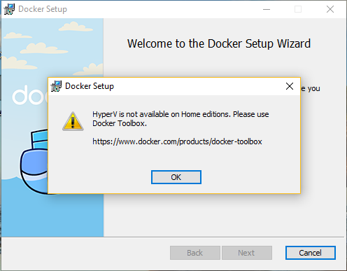
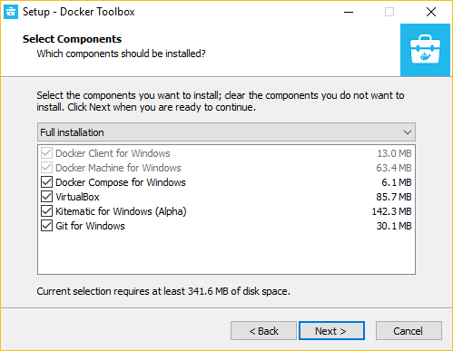
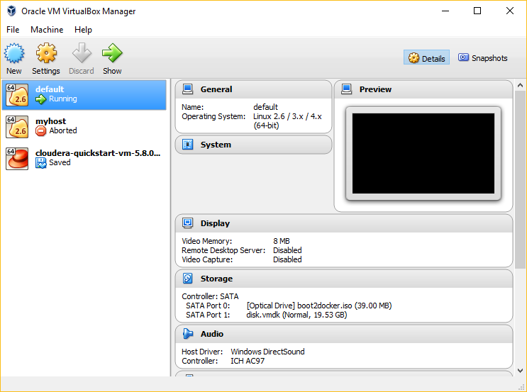
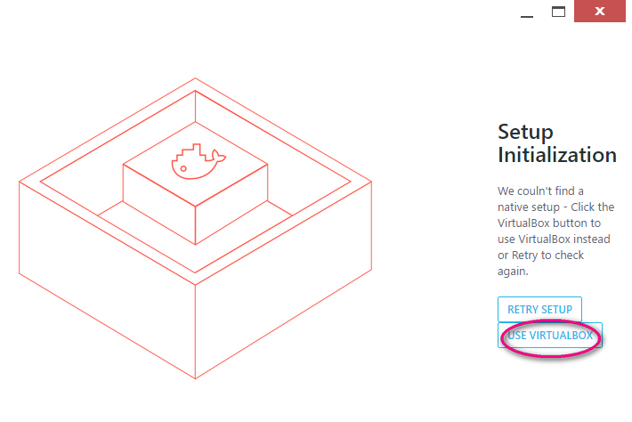
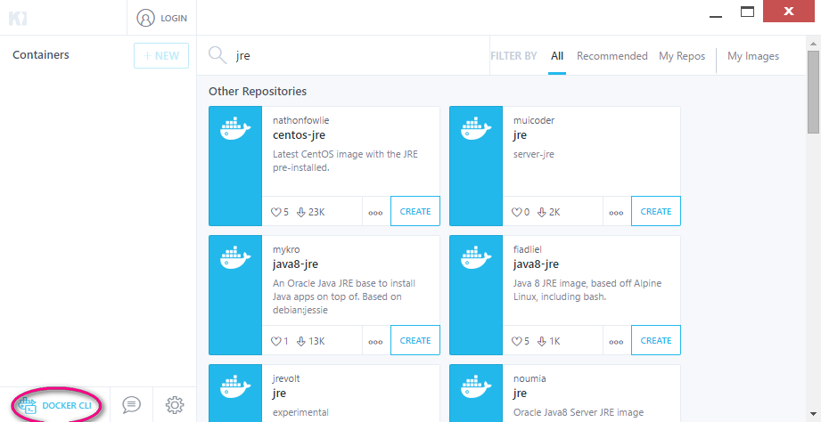
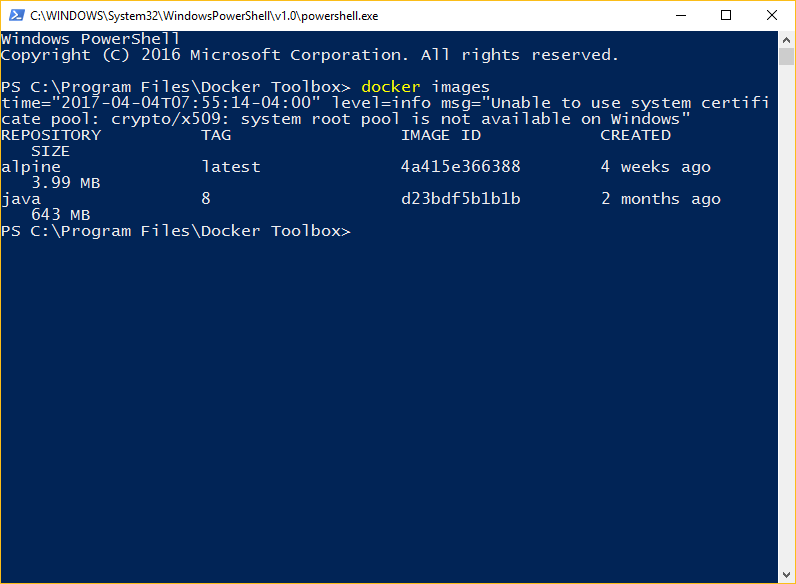

Docker is really easy to set up and
get started. In this lab, you’ll learn how to get started
with basic docker commands.
Expected duration: 120 minutes
1. Download Docker package from https://docs.docker.com/engine/getstarted/step_one/
2. Install the package
3. If you see the following message, your machine is not equipped to install Docker natively. Go to to the step (1.2) to install Docker Toolbox.

return to top of exercise, return to top
1. Download Docker Toolbox

return to top of exercise, return to top
Trouble-shooting: If you experience VirtualBox problem on your Windows platform, it is likely because virtualization is not enabled in your bios.
Solution: Enable virtualization on your bios following steps mentioned http://forums.toshiba.com/t5/Windows-7-Knowledge-Base/How-To-Enter-the-system-BIOS-from-Windows-7/ta-p/275629
C:\>docker-machine -v
docker-machine version 0.10.0, build 76ed2a6
return to top of exercise, return to top
In this exercise, you are going to
exercise various Docker machine commands.
| C:\>docker-machine --help Usage: docker-machine [OPTIONS] COMMAND [arg...] Create and manage machines running Docker. Version: 0.10.0, build 76ed2a6 Author: Docker Machine Contributors - <https://github.com/docker/machine> Options: --debug, -D Enable debug mode --storage-path, -s "C:\Users\sangs\.docker\machine" Configures storage path [$MACHINE_STORAGE_PATH] --tls-ca-cert CA to verify remotes against [$MACHINE_TLS_CA_CERT] --tls-ca-key Private key to generate certificates [$MACHINE_TLS_CA_KEY] --tls-client-cert Client cert to use for TLS [$MACHINE_TLS_CLIENT_CERT] --tls-client-key Private key used in client TLS auth [$MACHINE_TLS_CLIENT_KEY] --github-api-token Token to use for requests to the Github API [$MACHINE_GITHUB_API_TOKEN] --native-ssh Use the native (Go-based) SSH implementation. [$MACHINE_NATIVE_SSH] --bugsnag-api-token BugSnag API token for crash reporting [$MACHINE_BUGSNAG_API_TOKEN] --help, -h show help --version, -v print the version Commands: active Print which machine is active config Print the connection config for machine create Create a machine env Display the commands to set up the environment for the Docker client inspect Inspect information about a machine ip Get the IP address of a machine kill Kill a machine ls List machines provision Re-provision existing machines regenerate-certs Regenerate TLS Certificates for a machine restart Restart a machine rm Remove a machine ssh Log into or run a command on a machine with SSH. scp Copy files between machines start Start a machine status Get the status of a machine stop Stop a machine upgrade Upgrade a machine to the latest version of Docker url Get the URL of a machine version Show the Docker Machine version or a machine docker version help Shows a list of commands or help for one command Run 'docker-machine COMMAND --help' for more information on a command. |
| C:\>docker-machine active --help Usage: docker-machine active [OPTIONS] [arg...] Print which machine is active Options: --timeout, -t "10" Timeout in seconds, default to 10s C:\>docker-machine status -h Usage: docker-machine status [arg...] Get the status of a machine Description: Argument is a machine name. C:\> |
| C:\>docker-machine ls NAME ACTIVE DRIVER STATE URL SWARM DOCKER ERRORS |
| C:\>docker-machine create default Running pre-create checks... (default) Default Boot2Docker ISO is out-of-date, downloading the latest release... (default) Latest release for github.com/boot2docker/boot2docker is v17.03.1-ce (default) Downloading C:\Users\sangs\.docker\machine\cache\boot2docker.iso from https://github.com/boot2docker/boot2docker/releases/download/v17.03.1-ce/boot2docker.iso... (default) 0%....10%....20%....30%....40%....50%....60%....70%....80%....90%....100% Creating machine... (default) Copying C:\Users\sangs\.docker\machine\cache\boot2docker.iso to C:\Users\sangs\.docker\machine\machines\default\boot2docker.iso... (default) Creating VirtualBox VM... (default) Creating SSH key... (default) Starting the VM... (default) Check network to re-create if needed... (default) Waiting for an IP... Waiting for machine to be running, this may take a few minutes... Detecting operating system of created instance... Waiting for SSH to be available... Detecting the provisioner... Provisioning with boot2docker... Copying certs to the local machine directory... Copying certs to the remote machine... Setting Docker configuration on the remote daemon... Checking connection to Docker... Docker is up and running! To see how to connect your Docker Client to the Docker Engine running on this virtual machine, run: docker-machine env default C:\> |
| C:\>docker-machine ls NAME ACTIVE DRIVER STATE URL SWARM DOCKER ERRORS default * virtualbox Running tcp://192.168.99.100:2376 v17.03.1-ce |
| C:\>docker-machine create
another-docker-machine Running pre-create checks... Creating machine... (another-docker-machine) Copying C:\Users\sangs\.docker\machine\cache\boot2docker.iso to C:\Users\sangs\.docker\machine\machines\another-docker-machine\boot2docker.iso... (another-docker-machine) Creating VirtualBox VM... (another-docker-machine) Creating SSH key... (another-docker-machine) Starting the VM... (another-docker-machine) Check network to re-create if needed... (another-docker-machine) Waiting for an IP... Waiting for machine to be running, this may take a few minutes... Detecting operating system of created instance... Waiting for SSH to be available... Detecting the provisioner... Provisioning with boot2docker... Copying certs to the local machine directory... Copying certs to the remote machine... Setting Docker configuration on the remote daemon... Checking connection to Docker... Docker is up and running! To see how to connect your Docker Client to the Docker Engine running on this virtual machine, run: docker-machine env another-docker-machine |
| C:\>docker-machine ls NAME ACTIVE DRIVER STATE URL SWARM DOCKER ERRORS another-docker-machine - virtualbox Running tcp://192.168.99.101:2376 v17.03.1-ce default * virtualbox Running tcp://192.168.99.100:2376 v17.03.1-ce |
| C:\>docker-machine rm
another-docker-machine
About to remove another-docker-machine WARNING: This action will delete both local reference and remote instance. Are you sure? (y/n): y Successfully removed another-docker-machine C:\>docker-machine ls NAME ACTIVE DRIVER STATE URL SWARM DOCKER ERRORS default * virtualbox Running tcp://192.168.99.100:2376 v17.03.1-ce |
| C:\>docker-machine stop default Stopping "default"... Machine "default" was stopped. C:\>docker-machine ls NAME ACTIVE DRIVER STATE URL SWARM DOCKER ERRORS default - virtualbox Stopped Unknown |
| C:\>docker-machine start default Starting "default"... (default) Check network to re-create if needed... (default) Waiting for an IP... Machine "default" was started. Waiting for SSH to be available... Detecting the provisioner... Started machines may have new IP addresses. You may need to re-run the `docker-machine env` command. C:\>docker-machine ls NAME ACTIVE DRIVER STATE URL SWARM DOCKER ERRORS default * virtualbox Running tcp://192.168.99.100:2376 v17.03.1-ce C:\>docker-machine status default Running |
| C:\>docker-machine status default Running C:\>docker-machine status Running |
Note that if you don't specify the name of the docker machine, "default" docker machine is assumed.
| C:\>docker-machine ls NAME ACTIVE DRIVER STATE URL SWARM DOCKER ERRORS default * virtualbox Running tcp://192.168.99.100:2376 v17.03.1-ce C:\>docker-machine ip 192.168.99.100 C:\>docker-machine ip default 192.168.99.100 C:\>docker-machine url tcp://192.168.99.100:2376 |
You can check your VirtualBox and see all the docker-machines that have been created. In the example, there are two docker-machines - "default" and "myhost".

return to top of exercise, return to top
Try the following "docker-machine" commands
- docker-machine restart <docker-machine-name>
- docker-machine status <docker-machine-name>
1. Display top-level docker help.
Note: You might see "time="2017-04-03T19:01:47-04:00" level=info msg="Unable to use system certificate pool: crypto/x509: system root pool is not available on Windows" for every docker command. This does not hinder your docker operation so you can just ignore it.
C:\>docker --help
time="2017-04-03T19:01:47-04:00" level=info msg="Unable to use system certificate pool: crypto/x509: system root pool is not available on Windows"
Usage: docker COMMAND
A self-sufficient runtime for containers
Options:
--config string Location of client config files (default "C:\Users\sangs\.docker")
-D, --debug Enable debug mode
--help Print usage
-H, --host list Daemon socket(s) to connect to (default [])
-l, --log-level string Set the logging level ("debug", "info", "warn", "error", "fatal") (default "info")
--tls Use TLS; implied by --tlsverify
--tlscacert string Trust certs signed only by this CA (default "C:\Users\sangs\.docker\machine\machines\default\ca.pem")
--tlscert string Path to TLS certificate file (default "C:\Users\sangs\.docker\machine\machines\default\cert.pem")
--tlskey string Path to TLS key file (default "C:\Users\sangs\.docker\machine\machines\default\key.pem")
--tlsverify Use TLS and verify the remote (default true)
-v, --version Print version information and quit
Management Commands:
container Manage containers
image Manage images
network Manage networks
node Manage Swarm nodes
plugin Manage plugins
secret Manage Docker secrets
service Manage services
stack Manage Docker stacks
swarm Manage Swarm
system Manage Docker
volume Manage volumes
Commands:
attach Attach to a running container
build Build an image from a Dockerfile
commit Create a new image from a container's changes
cp Copy files/folders between a container and the local filesystem
create Create a new container
diff Inspect changes to files or directories on a container's filesystem
events Get real time events from the server
exec Run a command in a running container
export Export a container's filesystem as a tar archive
history Show the history of an image
images List images
import Import the contents from a tarball to create a filesystem image
info Display system-wide information
inspect Return low-level information on Docker objects
kill Kill one or more running containers
load Load an image from a tar archive or STDIN
login Log in to a Docker registry
logout Log out from a Docker registry
logs Fetch the logs of a container
pause Pause all processes within one or more containers
port List port mappings or a specific mapping for the container
ps List containers
pull Pull an image or a repository from a registry
push Push an image or a repository to a registry
rename Rename a container
restart Restart one or more containers
rm Remove one or more containers
rmi Remove one or more images
run Run a command in a new container
save Save one or more images to a tar archive (streamed to STDOUT by default)
search Search the Docker Hub for images
start Start one or more stopped containers
stats Display a live stream of container(s) resource usage statistics
stop Stop one or more running containers
tag Create a tag TARGET_IMAGE that refers to SOURCE_IMAGE
top Display the running processes of a container
unpause Unpause all processes within one or more containers
update Update configuration of one or more containers
version Show the Docker version information
wait Block until one or more containers stop, then print their exit codes
Run 'docker COMMAND --help' for more information on a command.
C:\>
2. Display docker command help
C:\>docker container --help
time="2017-04-03T19:02:51-04:00" level=info msg="Unable to use system certificate pool: crypto/x509: system root pool is not available on Windows"
Usage: docker container COMMAND
Manage containers
Options:
--help Print usage
Commands:
attach Attach to a running container
commit Create a new image from a container's changes
cp Copy files/folders between a container and the local filesystem
create Create a new container
diff Inspect changes to files or directories on a container's filesystem
exec Run a command in a running container
export Export a container's filesystem as a tar archive
inspect Display detailed information on one or more containers
kill Kill one or more running containers
logs Fetch the logs of a container
ls List containers
pause Pause all processes within one or more containers
port List port mappings or a specific mapping for the container
prune Remove all stopped containers
rename Rename a container
restart Restart one or more containers
rm Remove one or more containers
run Run a command in a new container
start Start one or more stopped containers
stats Display a live stream of container(s) resource usage statistics
stop Stop one or more running containers
top Display the running processes of a container
unpause Unpause all processes within one or more containers
update Update configuration of one or more containers
wait Block until one or more containers stop, then print their exit codes
Run 'docker container COMMAND --help' for more information on a command.
C:\>
return to top of exercise, return to top
| C:\>docker -v
Docker version 17.03.0-ce, build 60ccb22 C:\>docker info error during connect: Get http://%2F%2F.%2Fpipe%2Fdocker_engine/v1.26/info: open //./pipe/docker_engine: The system cannot find the file specified. In the default daemon configuration on Windows, the docker client must be run elevated to connect. This error may also indicate that the docker daemon is not running. C:\>docker version Client: Version: 17.03.0-ce API version: 1.26 Go version: go1.7.5 Git commit: 60ccb22 Built: Thu Mar 2 01:11:00 2017 OS/Arch: windows/amd64 error during connect: Get http://%2F%2F.%2Fpipe%2Fdocker_engine/v1.26/info: open //./pipe/docker_engine: The system cannot find the file specified. In the default daemon configuration on Windows, the docker client must be run elevated to connect. This error may also indicate that the docker daemon is not running. |
| C:\>docker-machine env SET DOCKER_TLS_VERIFY=1 SET DOCKER_HOST=tcp://192.168.99.100:2376 SET DOCKER_CERT_PATH=C:\Users\sangs\.docker\machine\machines\default SET DOCKER_MACHINE_NAME=default SET COMPOSE_CONVERT_WINDOWS_PATHS=true REM Run this command to configure your shell: REM @FOR /f "tokens=*" %i IN ('docker-machine env') DO @%i |
| C:\>@FOR /f "tokens=*" %i IN ('docker-machine env') DO @%i |
| C:\>docker info Containers: 0 Running: 0 Paused: 0 Stopped: 0 Images: 0 Server Version: 17.03.1-ce Storage Driver: aufs Root Dir: /mnt/sda1/var/lib/docker/aufs Backing Filesystem: extfs Dirs: 0 Dirperm1 Supported: true Logging Driver: json-file Cgroup Driver: cgroupfs Plugins: Volume: local Network: bridge host macvlan null overlay ... C:\>docker version time="2017-04-03T19:41:09-04:00" level=info msg="Unable to use system certificate pool: crypto/x509: system root pool is not available on Windows" Client: Version: 17.03.0-ce API version: 1.26 Go version: go1.7.5 Git commit: 60ccb22 Built: Thu Mar 2 01:11:00 2017 OS/Arch: windows/amd64 Server: Version: 17.03.1-ce API version: 1.27 (minimum version 1.12) Go version: go1.7.5 Git commit: c6d412e Built: Mon Mar 27 16:58:30 2017 OS/Arch: linux/amd64 Experimental: false |
| C:\Users\sangs>docker-machine create
my-docker-machine Running pre-create checks... Creating machine... (my-docker-machine) Copying C:\Users\sangs\.docker\machine\cache\boot2docker.iso to C:\Users\sangs\.docker\machine\machines\my-docker-machine\boot2docker.iso... (my-docker-machine) Creating VirtualBox VM... (my-docker-machine) Creating SSH key... (my-docker-machine) Starting the VM... (my-docker-machine) Check network to re-create if needed... (my-docker-machine) Waiting for an IP... Waiting for machine to be running, this may take a few minutes... Detecting operating system of created instance... Waiting for SSH to be available... Detecting the provisioner... Provisioning with boot2docker... Copying certs to the local machine directory... Copying certs to the remote machine... Setting Docker configuration on the remote daemon... Checking connection to Docker... Docker is up and running! To see how to connect your Docker Client to the Docker Engine running on this virtual machine, run: docker-machine env my-docker-machine |
| C:\Users\sangs>docker-machine ls NAME ACTIVE DRIVER STATE URL SWARM DOCKER ERRORS default - virtualbox Running tcp://192.168.99.100:2376 v17.03.1-ce my-docker-machine - virtualbox Running tcp://192.168.99.101:2376 v17.03.1-ce |
| C:\Users\sangs>docker-machine env
my-docker-machine SET DOCKER_TLS_VERIFY=1 SET DOCKER_HOST=tcp://192.168.99.101:2376 SET DOCKER_CERT_PATH=C:\Users\sangs\.docker\machine\machines\my-docker-machine SET DOCKER_MACHINE_NAME=my-docker-machine SET COMPOSE_CONVERT_WINDOWS_PATHS=true REM Run this command to configure your shell: REM @FOR /f "tokens=*" %i IN ('docker-machine env my-docker-machine') DO @%i C:\Users\sangs>@FOR /f "tokens=*" %i IN ('docker-machine env my-docker-machine') DO @%i |
| C:\Users\sangs>docker-machine ls NAME ACTIVE DRIVER STATE URL SWARM DOCKER ERRORS default - virtualbox Running tcp://192.168.99.100:2376 v17.03.1-ce my-docker-machine * virtualbox Running tcp://192.168.99.101:2376 v17.03.1-ce C:\Users\sangs>docker-machine active my-docker-machine |
| C:\>docker images REPOSITORY TAG IMAGE ID CREATED SIZE |
| C:\Users\sangs>docker pull alpine Using default tag: latest latest: Pulling from library/alpine 627beaf3eaaf: Pull complete Digest: sha256:58e1a1bb75db1b5a24a462dd5e2915277ea06438c3f105138f97eb53149673c4 Status: Downloaded newer image for alpine:latest C:\Users\sangs>docker images REPOSITORY TAG IMAGE ID CREATED SIZE alpine latest 4a415e366388 3 weeks ago 3.99 MB |
| C:\Users\sangs>docker pull ubuntu Using default tag: latest latest: Pulling from library/ubuntu d54efb8db41d: Pull complete f8b845f45a87: Pull complete e8db7bf7c39f: Pull complete 9654c40e9079: Pull complete 6d9ef359eaaa: Pull complete Digest: sha256:dd7808d8792c9841d0b460122f1acf0a2dd1f56404f8d1e56298048885e45535 Status: Downloaded newer image for ubuntu:latest C:\Users\sangs>docker images REPOSITORY TAG IMAGE ID CREATED SIZE alpine latest 4a415e366388 3 weeks ago 3.99 MB ubuntu latest 0ef2e08ed3fa 4 weeks ago 130 MB |
| C:\Users\sangs>docker pull
errordeveloper/oracle-jre time="2017-04-07T06:39:46-04:00" level=info msg="Unable to use system certificate pool: crypto/x509: system root pool is not available on Windows" Using default tag: latest latest: Pulling from errordeveloper/oracle-jre a3ed95caeb02: Pull complete 77c6c00e8b61: Pull complete 3aaade50789a: Pull complete 00cf8b9f3d2a: Pull complete 7ff999a2256f: Pull complete d2ba336f2e44: Pull complete dfda3e01f2b6: Pull complete 872261e333ed: Pull complete 362fc0a02dea: Pull complete Digest: sha256:060067dbe0016747ed41afbc2a19c19dd9ea8bc9a19c1b3ee0e21a794d2608c7 Status: Downloaded newer image for errordeveloper/oracle-jre:latest C:\>docker images REPOSITORY TAG IMAGE ID CREATED SIZE alpine latest 4a415e366388 4 weeks ago 3.99 MB ubuntu latest 0ef2e08ed3fa 5 weeks ago 130 MB errordeveloper/oracle-jre latest d44f1f3413ce 16 months ago 161 MB |
1. Remove "ubuntu" image (from local installation)
| C:\>docker image rm ubuntu Untagged: ubuntu:latest Untagged: ubuntu@sha256:dd7808d8792c9841d0b460122f1acf0a2dd1f56404f8d1e56298048885e45535 Deleted: sha256:0ef2e08ed3fabfc44002ccb846c4f2416a2135affc3ce39538834059606f32dd Deleted: sha256:0d58a35162057295d273c5fb8b7e26124a31588cdadad125f4bce63b638dddb5 Deleted: sha256:cb7f997e049c07cdd872b8354052c808499937645f6164912c4126015df036cc Deleted: sha256:fcb4581c4f016b2e9761f8f69239433e1e123d6f5234ca9c30c33eba698487cc Deleted: sha256:b53cd3273b78f7f9e7059231fe0a7ed52e0f8e3657363eb015c61b2a6942af87 Deleted: sha256:745f5be9952c1a22dd4225ed6c8d7b760fe0d3583efd52f91992463b53f7aea3 |
| C:\>docker images time="2017-04-04T04:43:58-04:00" level=info msg="Unable to use system certificate pool: crypto/x509: system root pool is not available on Windows" REPOSITORY TAG IMAGE ID CREATED SIZE alpine latest 4a415e366388 4 weeks ago 3.99 MB java 8 d23bdf5b1b1b 2 months ago 643 MB |
| C:\>docker rmi ubuntu |
| C:\>docker image inspect
alpine
[ { "Id": "sha256:4a415e3663882fbc554ee830889c68a33b3585503892cc718a4698e91ef2a526", "RepoTags": [ "alpine:latest" ], "RepoDigests": [ "alpine@sha256:58e1a1bb75db1b5a24a462dd5e2915277ea06438c3f105138f97eb53149673c4" ], "Parent": "", "Comment": "", "Created": "2017-03-03T20:32:37.723773456Z", "Container": "84baa8e89c006369728bc59e4f86884ed32a916067c3e26d284de6e7fd730b49", "ContainerConfig": { "Hostname": "84baa8e89c00", "Domainname": "", "User": "", "AttachStdin": false, "AttachStdout": false, "AttachStderr": false, "Tty": false, "OpenStdin": false, "StdinOnce": false, "Env": [ "PATH=/usr/local/sbin:/usr/local/bin:/usr/sbin:/usr/bin:/sbin:/bin" ], "Cmd": [ "/bin/sh", "-c", "#(nop) ADD file:730030a984f5f0c5dc9b15ab61da161082b5c0f6e112a9c921b42321140c3927 " ], "Image": "", "Volumes": null, "WorkingDir": "", "Entrypoint": null, "OnBuild": null, "Labels": null }, "DockerVersion": "1.12.6", "Author": "", "Config": { "Hostname": "84baa8e89c00", "Domainname": "", "User": "", "AttachStdin": false, "AttachStdout": false, "AttachStderr": false, "Tty": false, "OpenStdin": false, "StdinOnce": false, "Env": [ "PATH=/usr/local/sbin:/usr/local/bin:/usr/sbin:/usr/bin:/sbin:/bin" ], "Cmd": null, "Image": "", "Volumes": null, "WorkingDir": "", "Entrypoint": null, "OnBuild": null, "Labels": null }, "Architecture": "amd64", "Os": "linux", "Size": 3987495, "VirtualSize": 3987495, "GraphDriver": { "Name": "aufs", "Data": null }, "RootFS": { "Type": "layers", "Layers": [ "sha256:23b9c7b43573dd164619ad59e9d51eda4095926729f59d5f22803bcbe9ab24c2" ] } } ] |
| C:\Users\sangs>docker inspect
errordeveloper/oracle-jre time="2017-04-07T06:43:14-04:00" level=info msg="Unable to use system certificate pool: crypto/x509: system root pool is not available on Windows" [ { "Id": "sha256:d44f1f3413ce9eac32bdb2f9986733c79eecbd5cad9babb10363e19b41621048", "RepoTags": [ "errordeveloper/oracle-jre:latest" ], "RepoDigests": [ "errordeveloper/oracle-jre@sha256:060067dbe0016747ed41afbc2a19c19dd9ea8bc9a19c1b3ee0e21a794d2608c7" ], "Parent": "", "Comment": "", "Created": "2015-11-30T17:16:01.43397312Z", "Container": "de477578ff3e020125348d7685e39310b85308c4f122cb9281c57342fdb91288", "ContainerConfig": { "Hostname": "f882f57a5627", "Domainname": "", "User": "", "AttachStdin": false, "AttachStdout": false, "AttachStderr": false, "Tty": false, "OpenStdin": false, "StdinOnce": false, "Env": [ "PATH=/usr/local/sbin:/usr/local/bin:/usr/sbin:/usr/bin:/sbin:/bin:/usr/jdk1.8.0_66/bin", "JAVA_HOME=/usr/jdk1.8.0_66" ], "Cmd": [ "/bin/sh", "-c", "#(nop) CMD [\"-version\"]" ], "Image": "c63668cf7f0d64f5ffe065a1d91cdcc6ea21bf2496660ecc5412aed0fcd21a0d", "Volumes": null, "WorkingDir": "", "Entrypoint": [ "java" ], "OnBuild": [], "Labels": {} }, "DockerVersion": "1.8.3-rc4", "Author": "Ilya Dmitrichenko <errordeveloper@gmail.com>", "Config": { "Hostname": "f882f57a5627", "Domainname": "", "User": "", "AttachStdin": false, "AttachStdout": false, "AttachStderr": false, "Tty": false, "OpenStdin": false, "StdinOnce": false, "Env": [ "PATH=/usr/local/sbin:/usr/local/bin:/usr/sbin:/usr/bin:/sbin:/bin:/usr/jdk1.8.0_66/bin", "JAVA_HOME=/usr/jdk1.8.0_66" ], "Cmd": [ "-version" ], "Image": "c63668cf7f0d64f5ffe065a1d91cdcc6ea21bf2496660ecc5412aed0fcd21a0d", "Volumes": null, "WorkingDir": "", "Entrypoint": [ "java" ], "OnBuild": [], "Labels": {} }, "Architecture": "amd64", "Os": "linux", "Size": 161475328, "VirtualSize": 161475328, "GraphDriver": { "Name": "aufs", "Data": null }, "RootFS": { "Type": "layers", "Layers": [ "sha256:5f70bf18a086007016e948b04aed3b82103a36bea41755b6cddfaf10ace3c6ef", "sha256:461f75075df2a334108df11b185363d2afda21517fda5ffb10852020e7639b7b", "sha256:d9c122ba3e7627ce3008fd063788e8a1212d8de86248d66772f39f7b978634ef", "sha256:2e4090b968e1df4c6c6d8024c7e60f81148cf4b4dacaa2ece4f3e99f3dba3fc8", "sha256:4266fd267d6bfee846b1abef4ab786955e2d1625354fc59ed2ff25a0461db2d7", "sha256:b46c2431d956fdcc4b659bbb008e9df0a1ee186088d494267232e562b3b7f3d6", "sha256:fe8ed9f638c2465e53d616918ce063f2df83c9ce5cb2a18ee5f334432c1dc76f", "sha256:5f70bf18a086007016e948b04aed3b82103a36bea41755b6cddfaf10ace3c6ef", "sha256:5f70bf18a086007016e948b04aed3b82103a36bea41755b6cddfaf10ace3c6ef", "sha256:d4ea07fbf6e9e5a2153ba75a743a683e9ea55d2643c556ca36675bea85000ba1", "sha256:5f70bf18a086007016e948b04aed3b82103a36bea41755b6cddfaf10ace3c6ef", "sha256:9efc25c158ae11e5bc2dcee93dfd2ff9ee49bbeae3d19e67a450937be3f788ca", "sha256:5f70bf18a086007016e948b04aed3b82103a36bea41755b6cddfaf10ace3c6ef", "sha256:5f70bf18a086007016e948b04aed3b82103a36bea41755b6cddfaf10ace3c6ef", "sha256:5f70bf18a086007016e948b04aed3b82103a36bea41755b6cddfaf10ace3c6ef" ] } } ] |
| C:\>docker history
errordeveloper/oracle-jre IMAGE CREATED CREATED BY SIZE COMMENT d44f1f3413ce 16 months ago /bin/sh -c #(nop) CMD ["-version"] 0 B <missing> 16 months ago /bin/sh -c #(nop) ENTRYPOINT &{["java"]} 0 B <missing> 16 months ago /bin/sh -c #(nop) ENV PATH=/usr/local/sbin... 0 B <missing> 16 months ago /bin/sh -c curl --silent --location ... 156 MB <missing> 16 months ago /bin/sh -c #(nop) ENV JAVA_HOME=/usr/jdk1.... 0 B <missing> 16 months ago /bin/sh -c opkg-install curl ca-certificates 912 kB <missing> 16 months ago /bin/sh -c #(nop) MAINTAINER Ilya Dmitrich... 0 B <missing> 20 months ago /bin/sh -c #(nop) CMD ["/bin/sh"] 0 B <missing> 20 months ago /bin/sh -c opkg-cl install http://download... 441 kB <missing> 20 months ago /bin/sh -c opkg-cl install http://download... 70.6 kB <missing> 20 months ago /bin/sh -c #(nop) ADD file:d01ddbb13c1e847... 9.15 kB <missing> 20 months ago /bin/sh -c #(nop) ADD file:e2c3819e14cb4b8... 103 B <missing> 20 months ago /bin/sh -c #(nop) ADD file:1fb1c8c23666e2d... 220 B <missing> 20 months ago /bin/sh -c #(nop) ADD file:317a8c7f54c3696... 4.27 MB <missing> 20 months ago /bin/sh -c #(nop) MAINTAINER Jeff Lindsay ... 0 B |
| C:\>docker image history alpine IMAGE CREATED CREATED BY SIZE COMMENT 4a415e366388 4 weeks ago /bin/sh -c #(nop) ADD file:730030a984f5f0c... 3.99 MB |
| C:\Users\sangs>docker image history
ubuntu time="2017-04-07T06:44:31-04:00" level=info msg="Unable to use system certificate pool: crypto/x509: system root pool is not available on Windows" IMAGE CREATED CREATED BY SIZE COMMENT 0ef2e08ed3fa 5 weeks ago /bin/sh -c #(nop) CMD ["/bin/bash"] 0 B <missing> 5 weeks ago /bin/sh -c mkdir -p /run/systemd && echo '... 7 B <missing> 5 weeks ago /bin/sh -c sed -i 's/^#\s*\(deb.*universe\... 1.9 kB <missing> 5 weeks ago /bin/sh -c rm -rf /var/lib/apt/lists/* 0 B <missing> 5 weeks ago /bin/sh -c set -xe && echo '#!/bin/sh' >... 745 B <missing> 5 weeks ago /bin/sh -c #(nop) ADD file:efb254bc677d66d... 130 MB |
| C:\>docker image prune WARNING! This will remove all dangling images. Are you sure you want to continue? [y/N] y Total reclaimed space: 0 B |
| PS C:\Program Files\Docker Toolbox> docker
images -q 186db55ab0b8 186db55ab0b8 772ceebd2c9b 2698323ee8ec a0f5d7301767 9546ca122d3a 5e69fe4b3c31 00f017a8c2a6 c017141bdaa8 4a415e366388 0ef2e08ed3fa d23bdf5b1b1b 48b5124b2768 f589ccde7957 079bb6eb72f3 6b362a9f73eb PS C:\Program Files\Docker Toolbox> docker image rm $(docker images -q) Untagged: tomcat:latest Untagged: tomcat@sha256:6c990e13a80ab65636f1a89402fd450f0e20253b33bd6589fd84b5ead45b8733 Deleted: sha256:2698323ee8ec36b3009cc67d1c00724b954fcd03455aa6b2ec8d742f42cd2544 Deleted: sha256:6a2d00684b22f7cb3fc7d7fbec555969bfc25d25c6d960456c3783c22e0dd5a2 Deleted: sha256:9b371d03bd98831deda65ce53d071cc1f705e4ad69c15d2bbb82d42ed9385414 Deleted: sha256:3b544553cf591e534274432125d243f3bb2b6e8e1176c41e14295016e98473d6 Deleted: sha256:86c96a73f7c53fc888fc8a6bbd3c479bde296c2f7db2dea20c3d539e203cf012 Deleted: sha256:7cf939f8682c150a696f0cf0100c032be5fa5e7174acf307d0f0b4de37399f94 Deleted: sha256:91cd7053f379a5b4180efadb7ac57478a28644cda21c177df29c280b7203b181 Deleted: sha256:3d140599d0af4bb56ecf2cbca4dc3bac232d698dd82441b49d01bcc6aa9ac554 Deleted: sha256:f3c61cb5ca10d92d971e2c55789339d96f6f6aae1334c0aeb3d1cd3e6299e8cc Deleted: sha256:c5768da69d6a1bdc76592c10a5814ac48b1008d7b2e9df81f5990e5e70aae7b7 Deleted: sha256:763ac6a64f068afd061160ff77b7ab41f61aba49b554bfe39ca033fcbf4f2d3c |
| C:\>docker search java time="2017-04-04T07:34:50-04:00" level=info msg="Unable to use system certificate pool: crypto/x509: system root pool is not available on Windows" NAME DESCRIPTION STARS OFFICIAL AUTOMATED java Java is a concurrent, class-based, and obj... 1336 [OK] anapsix/alpine-java Oracle Java 8 (and 7) with GLIBC 2.23 over... 199 [OK] isuper/java-oracle This repository contains all java releases... 52 [OK] lwieske/java-8 Oracle Java 8 Container - Full + Slim - Ba... 33 [OK] nimmis/java-centos This is docker images of CentOS 7 with dif... 24 [OK] ibmjava Official IBM® SDK, Java™ Technology Editio... 23 [OK] nimmis/java This is docker images of Ubuntu 14.04 LTS ... 10 [OK] nimmis/alpine-java This is docker images of Alpine 3.5 with d... 9 [OK] cardcorp/r-java Minimal R environment with Java for hadoop... 6 [OK] 1science/java Java Docker images based on Alpine Linux 6 [OK] blacklabelops/java Oracle Java Base Images. Alpine and CentOS... 4 [OK] andreluiznsilva/java Docker images for java applications 4 [OK] frekele/java docker run --rm --name java frekele/java 4 [OK] dwolla/java Dwolla’s custom Java image 1 [OK] tsuru/java Image for the Java (OpenJDK) platform in t... 1 [OK] beevelop/java Personal Java image based on Ubuntu 15.10 ... 1 [OK] konstruktoid/java Java base image 0 [OK] synopsis/java Docker image with Java 0 [OK] instructure/java A java base image based on instructure/core 0 [OK] anduin/java Anduin Java base image 0 [OK] infotechsoft/java Java on CentOS 0 [OK] axeclbr/java Java on Alpinelinux in Docker. 0 [OK] vicamo/java 0 [OK] bigtruedata/java Base image for java applications 0 [OK] esycat/java Oracle Java 8 on Ubuntu LTS 0 [OK] |
| C:\Users\sangs>docker search java:8 NAME DESCRIPTION STARS OFFICIAL AUTOMATED lwieske/java-8 Oracle Java 8 Container - Full + Slim - Ba... 33 [OK] sillenttroll/wildfly-java-8 WildFly container with java 8 3 [OK] sdorra/oracle-java-8 Docker base container for java 8 applications 2 [OK] thiagonego/tsuru-platform-java-8 tsuru-platform-java-8 1 [OK] goyalzz/ubuntu-java-8-maven-docker-image Ubuntu-Java-8-Maven-Docker-Image 1 [OK] ventura24/java-8-oracle Image based on Ubuntu 15:10 image with Ora... 1 [OK] wizardjedi/docker-oracle-java-8 Docker file for creating image with Oracle... 0 [OK] bodsch/docker-oracle-java-8 Docker Container with Oracle Java 8 0 [OK] marcielmj/java-8-alpine Alpine docker image with Oracle java 8. 0 [OK] kperson/alpine-java-8 Java 8/SBT/Scala 0 [OK] kperson/alpine-java-8-ffmpeg java 8, ffmpeg, alpine 0 [OK] akagelo/debian-jessie-maven3-java-8-node-4 debian-jessie-maven3-java-8-node-4 0 [OK] mayureshkrishna/java-8 Oracle Java 8 Container - Full + Slim - Ba... 0 [OK] xetys/java-8-docker-kubectl A docker image based on java 8, containing... 0 [OK] sercankaraoglu/java-8 java 8 base image 0 [OK] jianminhuang/java-8-runtime Docker Hub java 8 runtime 0 [OK] alexeydybov/java-8-oracle Java 8 HotSpot container 0 [OK] kperson/ubuntu-java-8 Java 8 and SBT 0 [OK] ventura24/java-8-alpine Alpine JRE8 with JCE 0 [OK] akagelo/debian-jessie-maven3-java-8 debian-jessie-maven3-java-8 0 [OK] aibano/ubuntu-java-8 ubuntu-java-8 0 [OK] afscmeio/java-8-base CentOS with latest Oracle Java 8 Server JRE 0 [OK] tce001/docker-ubuntu-java-8 development environment with java 8, git, ... 0 [OK] superuserltd/centos-7-java-8-openjdk-headle CentOS 7 Java 8 OpenJDK Headless 0 [OK] anderssv/openshift-sti-java-8 0 [OK] |
| C:\>docker search mongo NAME DESCRIPTION STARS OFFICIAL AUTOMATED mongo MongoDB document databases provide high av... 3122 [OK] mongo-express Web-based MongoDB admin interface, written... 135 [OK] mvertes/alpine-mongo light MongoDB container 44 [OK] mongoclient/mongoclient Official docker image for Mongoclient, fea... 23 [OK] mongooseim/mongooseim-docker MongooseIM server the latest stable version 9 [OK] torusware/speedus-mongo Always updated official MongoDB docker ima... 9 [OK] jacksoncage/mongo Instant MongoDB sharded cluster 6 [OK] khezen/mongo MongoDB Docker image including RocksDB sto... 4 [OK] yeasy/mongo-connector pipeline from a MongoDB cluster to other s... 4 [OK] asteris/apache-php-mongo Apache2.4 + PHP + Mongo + mod_rewrite 3 [OK] ackee/mongo MongoDB with fixed Bluemix permissions 1 [OK] jessedusty/mongo-flask Combination of superzazu/flask-python34 an... 1 [OK] kobotoolbox/mongo https://github.com/kobotoolbox/kobo-docker... 1 [OK] valtlfelipe/mongo Docker Image based on the latest Ubuntu im... 1 [OK] twistedogic/mongo Mongo with bind_ip option 0 [OK] kobotoolbox/base-mongo https://github.com/kobotoolbox/kobo-docker... 0 [OK] tagplus5/mongo mongo 0 [OK] koding/mongo-auto Koding Mongo image auto build from master ... 0 [OK] chpradmin/cp-mongo mongo 0 [OK] ekesken/mongo docker image for mongo that is configurabl... 0 [OK] skandyla/mongo Mongodb image based on official mongo 3.4 ... 0 [OK] bigtruedata/mongo Image for MongoDB 0 [OK] cloudunit/mongo-2-6 /cu-services/images/modules/mongo-2-6 0 [OK] roadmunk/mongo Mongo with replica set configuration and h... 0 [OK] quilt/mongo MongoDB container for quilt.io 0 [OK] |
return to top of exercise, return to top
In this exercise, you are going to play around with Kitematic, a Docker GUI tool. (Note: Kitematic is a legacy solution, bundled with Docker Toolbox. We recommend updating to Docker for Mac or Docker for Windows if your system meets the requirements for one of those applications.)
1. If your machine is using Docker Toolbox, you will have to choose "USE VIRTUALBOX" option.

1. Start Docker client

2. Run docker commands. Note that environment variables are already set for you.

return to top of exercise, return to top
1. Send the following files to docker-homeworks@jpassion.com